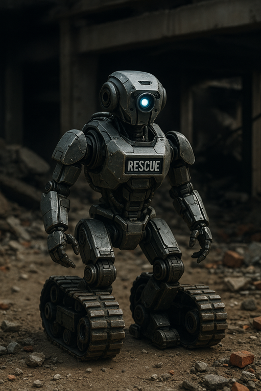

Robot de asistencia médica

Este robot está diseñado para asistir en hospitales, transportando medicinas, ayudando a pacientes con movilidad reducida y ofreciendo soporte en tareas rutinarias. Su diseño es compacto, higiénico y amable.
123 likes
Last updated 3 mins ago
Robot de rescate en desastres
Este robot está diseñado para operar en zonas peligrosas tras terremotos, incendios o derrumbes. Su cuerpo resistente y con tracción en ruedas u orugas le permite entrar en espacios estrechos y detectar señales de vida con sensores avanzados.
200 likes
Last updated 4 days ago
Robot industrial de ensamblaje automatizado
Este robot es utilizado en fábricas para tareas de ensamblaje de alta precisión. Con brazos robóticos articulados y sensores láser, puede trabajar con piezas pequeñas en líneas de producción, mejorando la velocidad y la eficiencia del proceso.
330 likes
Last updated 5 hours ago
Robot explorador espacial
Este robot está diseñado para misiones de exploración en planetas como Marte o la Luna. Equipado con paneles solares, cámaras de alta resolución y ruedas adaptadas al terreno rocoso, recopila datos científicos en ambientes extremos donde los humanos no pueden llegar.
420 likes
Last updated 6 hours ago
Robot de vigilancia y seguridad
Este robot patrulla instalaciones como fábricas, aeropuertos o centros comerciales. Cuenta con cámaras 360°, sensores de movimiento, visión nocturna y conexión en tiempo real con sistemas de seguridad. Su objetivo es detectar amenazas, grabar incidentes y alertar a los operarios.
820 likes
Last updated 12 minutes ago
Robot camarero o de servicio en restaurantes
Este robot está diseñado para atender mesas en restaurantes, cafeterías y hoteles. Puede entregar comida, recoger platos y hablar con los clientes mediante una interfaz de voz. Su diseño amigable e interactivo mejora la experiencia del cliente y reduce la carga del personal humano.
1220 likes
Last updated 2 hours ago
Robot educativo para niños
Este robot está diseñado para enseñar a niños conceptos de ciencia, matemáticas y programación. Tiene una apariencia amigable, habla con los niños y responde preguntas de forma interactiva. Se utiliza en aulas, talleres y hogares para estimular el aprendizaje tecnológico desde temprana edad.
130 likes
Last updated 3 weeks ago
Robot agrícola autónomo
Este robot está diseñado para trabajar en campos de cultivo. Puede sembrar, regar, aplicar fertilizantes o pesticidas, e incluso cosechar frutas o verduras. Gracias a sus sensores ambientales y sistema GPS, trabaja de forma autónoma y precisa para optimizar el rendimiento agrícola.
270 likes
Last updated 9 hours ago
Robot humanoide de asistencia en el hogar
Este robot está diseñado para ayudar en tareas domésticas como limpiar, organizar objetos, controlar dispositivos inteligentes o simplemente acompañar a personas mayores. Su aspecto amigable y su capacidad de entender comandos de voz lo hacen ideal para convivir en el entorno familiar.
1430 likes
Last updated 6 days ago